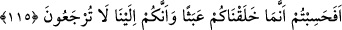

Ömürlerine göre insanlar ikiye ayrılır:
1- Nice ömür vardır müddeti uzundur, fakat imdâdı/faydası azdır. Bâzı
İsrâiloğulları’nın ömrü gibi. Onlardan bir kimse bin küsur yıl yaşamış, fakat ömürleri
kısa olduğu halde bu ümmetten olanların elde ettiklerinden bir şey elde edememiştir.
2- Nice ömür de vardır süresi az, fakat imdâdı/faydası çoktur. Bu ümmet içinde
kendisine hayır kapısı açılan ve bir anda Allah’ın inayetine ulaşan kimseler gibi.
Ömrüne bereket bahş olunan kimse az bir zamanda ifadeye sığmayacak mazhariyetlere
erer. Meşguliyetlerden âzâde olup sonra da himmetlerin bile ulaşamadığı şeylerin sana
fethedilmesi için samîmî bir niyetle Allah’a yönelmezsen; yine engellerin az olup sonra
da nefsinin âlemlerinden, bugününden ve yarınından O’na sefer etmezsen O’nun
inayetinden büsbütün mahrum kalmışsın demektir. Bir hadiste “İki haslet vardır ki,
insanların çoğu onlarda aldanmıştır: Sıhhat ve boş vakit.”[105] buyrulmuştur. Bu
hadisin mânâsı, sağlam kimsenin din veya dünya ile meşgul olması gerekir. Yoksa
onların ikisinde de aldanmıştır.
115. Sizi sadece boş yere yarattığımızı ve sizin hakikaten huzurumuza geri
getirilmeyeceğinizi mi sandınız?
Gafletinizin fazlalığından “Sizi sadece boş yere” hikmetsiz olarak “yarattığımızı ve
sizin hakikaten huzurumuza geri getirilmeyeceğinizi” bize dönmeyeceğinizi “mi
sandınız?” Gaflet ettiniz ve öyle mi zannettiniz? Yâni sizin yaratılmanızdaki maslahat,
size amel etmenizin emredilmesi, sonra da yaptıklarınızın karşılığının verilmesi için
tekrar diriltilmenizdir. Allah’a dönmenin mânâsı, kendisinden başka mâlik ve hâkimin
bulunmadığı yere dönmektir.
Tirmizî der ki: “Allah halkı kendisine ibâdet etmeleri, ibâdete sevab, ibâdetlerin terki
durumunda da onları cezalandırmak için yarattı. Eğer Allah’a ibadet ederlerse, dünya
köleliğinden kurtulmuş şerefli hür kullar, selâmet yurdu olan cennette melikler olurlar.
Eğer kulluğu terk edecek olurlarsa onlar bugün firari, alçak ve kınanmış kölelerdir;
yarın ise cehennem tabakaları arasındaki zindanlara atılmış düşmanlar olurlar.”
et-Te’vîlâtü’n-Necmiyye’de der ki: “Sizi sadece boş yere” size fayda veya zarar
verecek bir mânâ olmaksızın “yarattığımızı” onun için de hayvanların yaşadığı gibi bir
hayat sürdüğünüzü, bize yaklaşmak için sâlih amellerde bulunmadığınızı “ve” kahır ve
lütuf ile “sizin hakikaten huzurumuza geri getirilmeyeceğinizi mi sandınız?” Lütufla
dönmek, ıztırârî (zorunlu) ölümden önce ihtiyârî bir ölümle ölmektir. Bu da tabîatın
esfel-i sâfilîninden (aşağıların aşağısına) şerîat ve tarîkat ayakları ile hakîkat âleminin
a‘lâ-yı illiyyînine (yücelerin yücesine) dönmekle olur. Kahırla dönmek ise ıztırârî
(zorunlu) ölümden sonra cehenneme dünya şehvetleri ve ziynetlerine bağlanma